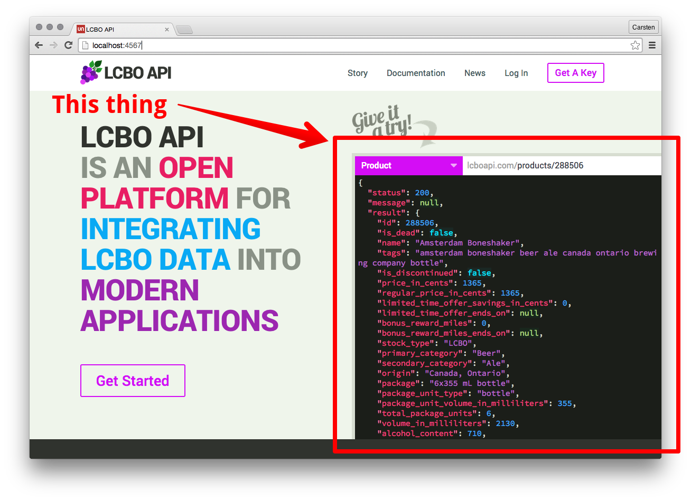
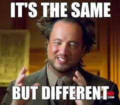

class: center, middle # Ember can React ### A component-based React / Ember comparison --- class: center, middle ## [@heycarsten](http://twitter.com/heycarsten) & [@ghedamat](http://twitter.com/ghedamat) ### [Unspace](https://unspace.ca) --- class: center, middle  --- class: center middle  --- class: center middle ## In React everything is a component, data flows down via _bindings_, and up via _events_. --- class: center middle ## This is not possible in Ember and that is why everyone is abandoning it. --- class: center middle <img src="trollface.png" width="75%"> --- class: center middle # Problem? --- class: center middle # A Wild, Live API Explorer<br>Component _Appears_ 1. It lets the user to choose from preconfigured endpoints 2. It lets the user to override the query path 3. It formats and highlights the response --- class: center middle  --- class: center middle ### **BOOM**. _React hardstyle implementation ’bout to drop._ <small>_(Thanks for this, Mattia.)_</small> --- class: center middle # How to: React [Demo & Source](http://emberjs.jsbin.com/temuxi/latest/edit?html,js,output) --- class: center middle  --- class: middle # React Structure ```html <!-- JSX --> <TryItComponent> <div className="try-it-component"> <div className="control-bar"> <TryItEndpointSelector /> <TryItEndpointPathInput /> </div> <TryItConsole/> </div> </TryItComponent> ``` --- class: middle # `TryItComponent` Holds state for current selection and path. ```javascript var TryItComponent = React.createClass({ getInitialState: function() { return { endpoints: ENDPOINTS, key: ENDPOINTS[0].key, path: ENDPOINTS[0].path, json: '{}' } }, loadJSON: function() { /*...*/ }, handleSelected: function(endpoint) { /*...*/ }, handleSubmit: function(data) { /*...*/ }, handlePathChange: function(path) { /*...*/ }, componentDidMount: function() { this.loadJSON(); }, render: function() { return ( /* JSX here */ ); } }); ``` --- # `TryItComponent` The `render` method inserts the child components: ```javascript var TryItComponent = React.createClass({ render: function() { return ( <div className="try-it-component"> <div className="control-bar"> <TryItEndpointSelector selectedKey={this.state.key} onSelected={this.handleSelected} /> <TryItEndpointPathInput path={this.state.path} onPathChange={this.handlePathChange} onSubmit={this.handleSubmit} /> </div> <TryItConsole json={this.state.json} /> </div> ); } }); ``` --- # `TryItEndpointSelector` Holds state for open or closed. ```javascript var TryItEndpointSelector = React.createClass({ getInitialState: function() { return { label: ENDPOINTS[0].label }; }, handleSelect: function(endpoint) { this.closeSelector(); this.props.onSelected(endpoint); }, openSelector: function() { this.setState({ isOpen: true }); }, closeSelector: function() { this.setState({ isOpen: false }); }, render: function() { /* JSX */ } }); ``` --- # `TryItEndpointSelector` ```javascript var TryItEndpointSelector = React.createClass({ // ... render: function() { var classes = React.addons.classSet({ 'endpoint-selector': true, 'open': this.state.isOpen }); // ... if (this.state.isOpen) { selector = ( <TryItEndpointSelectList selectedKey={this.props.selectedKey} onSelected={this.handleSelect} onDismiss={this.closeSelector} /> ); } else { selector = <div />; } return ( <div className={classes}> <div onClick={this.openSelector} className="endpoint-selector-label"> {label} </div> {selector} </div> ); } }); ``` --- # `TryItEndpointSelectList` ```javascript var TryItEndpointSelectList = React.createClass({ handleSelected: function(endpoint) { this.props.onSelected(endpoint); }, componentDidMount: function() { var component = this; $(document).one('click', function() { component.props.onDismiss(); return true; }); }, render: function() { return ( <ol className="endpoint-selector-list"> {ENDPOINTS.map(function(endpoint) { return <TryItEndpointOption onSelected={this.handleSelected.bind(this, endpoint)} key={endpoint.key} selectedKey={this.props.selectedKey} data={endpoint} />; }, this)} </ol> ); } }); ``` --- # `TryItEndpointOption` & `TryItEndpointPathInput` When an endpoint is selected, or the input field is submitted the the `onSelected` or the `onSubmit` callbacks are triggered. --- # `TryItComponent` ```javascript var TryItComponent = React.createClass({ loadJSON: function() { $.ajax({ url: 'http://lcboapi.com/' + this.state.path, dataType: 'jsonp' }).then(function(data) { this.setState({ json: JSON.stringify(data, null, 2) }); }.bind(this)); }, handleSelected: function(endpoint) { this.setState({ key: endpoint.key, path: endpoint.path, label: endpoint.label }, function() { this.loadJSON(); }.bind(this)); }, handleSubmit: function(data) { this.loadJSON(); }, handlePathChange: function(path) { this.setState({ path: path }); } }); ``` --- # `TryItConsole` Receives the current JSON as a passed property in `props`. ```javascript var TryItComponent = React.createClass({ render: function() { return ( ... <TryItConsole json={this.state.json} /> ... ); } }); ``` --- # `TryItConsole` `dangerouslySetInnerHTML`<sup>*</sup>!!! ```javascript var TryItConsole = React.createClass({ componentDidUpdate: function() { $(this.refs.codeDiv.getDOMNode()).scrollTop(0); }, render: function() { var html = Prism.highlight(this.props.json, Prism.languages.json); return ( <div ref="codeDiv" className="console"> <pre><code dangerouslySetInnerHTML={{__html: html}} /></pre> </div> ); } }); ``` <small>_<sup>*</sup> We actually kind of like this._</small> --- class: center middle # React * State lives in `TryItComponent` * Subcomponents get the state as `props` * Subcomponents pass down callbacks * Callbacks are called by subcomponents and "bubbled" up * `setState` in `TryItComponent` --- class: center middle # Okay, seems fine zro<sup>*</sup>… <small><sup>*</sup> Zro is a gender neutral form of "bro", now you know.</small> --- class: center middle # But did you know? --- class: center middle # Ember can React! <img src="carlton.gif"> --- class: center middle # How to: Ember [Demo & Source](http://emberjs.jsbin.com/hiqini/latest/edit?html,js,output) --- # Ember Structure ```html <script type="text/x-handlebars" data-template-name="components/try-it"> <div class="control-bar"> {{try-it-endpoint-selector selectedEndpoint=selectedEndpoint selected="didSelectEndpoint"}} {{try-it-endpoint-path-form path=endpointPath updated="didUpdatePath"}} </div> {{try-it-console json=json}} </script> ``` --- class: center, middle # Done, and DONE. --- class: center, middle # _Just kidding…_ --- # `TryItComponent` Holds state for current selection and path. ```javascript App.TryItComponent = Ember.Component.extend({ classNames: 'try-it-component', selectedEndpoint: ENDPOINTS[0], endpointPath: ENDPOINTS[0].path, json: '{}', actions: { didSelectEndpoint: function(endpoint) { this.set('selectedEndpoint', endpoint); this.set('endpointPath', endpoint.path); this.loadJSON(endpoint.path); }, didUpdatePath: function(path) { this.loadJSON(path); } }, loadJSON: function(path) { /*...*/ }, loadInitialJSON: function() { /*...*/ }.on('didInsertElement') }); ``` --- # `TryItComponent` Wiring it up: ```html <script type="text/x-handlebars" data-template-name="components/try-it"> <div class="control-bar"> {{try-it-endpoint-selector selectedEndpoint=selectedEndpoint selected="didSelectEndpoint"}} {{try-it-endpoint-path-form path=endpointPath updated="didUpdatePath"}} </div> {{try-it-console json=json}} </script> ``` <small>Uses bindings and passes action names instead of callbacks… _for now._ :)</small> --- # `TryItEndpointSelector` Holds state for open or closed. ```javascript App.TryItEndpointSelectorComponent = Ember.Component.extend({ classNames: 'endpoint-selector', classNameBindings: 'isOpen:open', actions: { showList: function() { this.set('isOpen', true); }, dismissList: function() { this.set('isOpen', false); }, didSelectEndpoint: function(endpoint) { this.sendAction('selected', endpoint); } } }); ``` --- # `TryItEndpointSelector` ```html <script type="text/x-handlebars" data-template-name="components/try-it-endpoint-selector"> <div class="endpoint-selector-label" {{action "showList"}}> {{~selectedEndpoint.label~}} </div> {{#if isOpen}} {{try-it-endpoint-selector-list selectedEndpoint=selectedEndpoint dismiss="dismissList" selected="didSelectEndpoint"}} {{/if}} </script> ``` --- # `TryItEndpointSelectorList` ```javascript App.TryItEndpointSelectorListComponent = Ember.Component.extend({ tagName: 'ol', classNames: 'endpoint-selector-list', endpoints: ENDPOINTS, actions: { didSelectEndpoint: function(endpoint) { this.sendAction('selected', endpoint); } }, didInsertElement: function() { var view = this; Ember.run.next(function() { Ember.$(document).one('click', function() { view.sendAction('dismiss'); }); }); } }); ``` --- # `TryItEndpointSelectorList` ```html <script type="text/x-handlebars" data-template-name="components/try-it-endpoint-selector-list"> {{#each endpoint in endpoints}} {{#try-it-endpoint-selector-list-item endpoint=endpoint selectedEndpoint=selectedEndpoint selected="didSelectEndpoint"}} {{endpoint.label}} {{/try-it-endpoint-selector-list-item}} {{/each}} </script> ``` --- # `TryItEndpointSelectorListItem` & `TryItEndpointPathForm` * Work in similar ways * Once an element is selected or the input field is submitted * The `selected` or the `updated` actions are triggered --- # `TryItEndpointPathForm` A thing to notice: ```javascript App.TryItEndpointPathFormComponent = Ember.Component.extend({ tagName: 'form', classNames: 'endpoint-path-input', didSubmit: function(event) { event.preventDefault(); // Send value with the action *instead* of using the binding this.sendAction('updated', this.get('path')); }.on('submit') }); ``` --- # `TryItComponent` ```javascript App.TryItComponent = Ember.Component.extend({ // ... actions: { didSelectEndpoint: function(endpoint) { this.set('selectedEndpoint', endpoint); this.set('endpointPath', endpoint.path); this.loadJSON(endpoint.path); }, didUpdatePath: function(path) { this.loadJSON(path); } }, loadJSON: function(path) { var view = this; $.ajax({ url: 'http://lcboapi.com/' + path, dataType: 'jsonp' }).then(function(data) { view.set('json', JSON.stringify(data, null, 2)); }); }, // ... }); ``` --- # `TryItConsole` Receives the current JSON as a `binding`: ```html <script type="text/x-handlebars" data-template-name="components/try-it"> ... {{try-it-console json=json}} ... </script> ``` --- # `TryItConsole` Receives the current JSON as a `binding`: ```javascript App.TryItConsoleComponent = Ember.Component.extend({ classNames: 'console', highlightedJSON: function() { return Prism.highlight(this.get('json'), Prism.languages.json); }.property('json'), didUpdateConsole: function() { this.$().scrollTop(0); }.observes('highlightedJSON').on('didInsertElement') }); ``` --- class: center middle # Ember * State lives in `TryItComponent` * Subcomponents get the state as `bindings` (that we use one way) * Subcomponents pass down action names * Actions are sent by subcomponents and "bubbled" up * `set` in `TryItComponent` --- class: center, middle # Notice anything? --- class: center, middle  --- class: center, middle # And remember… --- class: center, middle # Bindings _Down_ # Actions _Up_ --- class: center, middle # Controllers _Left_ # Yehuda's _Right_ <small>_Credit to @stefanpenner and @mixonic for this little bit of gold._</small> --- class: center, middle # Thanks [@heycarsten](http://twitter.com/heycarsten) & [@ghedamat](http://twitter.com/ghedamat) ## Full Source & Demos [React](http://emberjs.jsbin.com/temuxi/latest/edit?html,js,output)<br> [Ember](http://emberjs.jsbin.com/hiqini/latest/edit?html,js,output) --- class: center middle # [Unspace](http://unspace.ca)